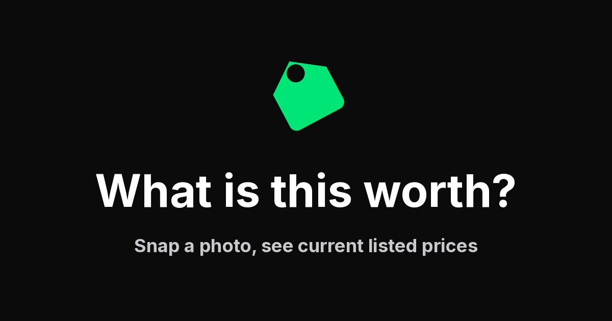

"What is this worth?" is the honest form of the question when you don't even know what you're holding. There's no tidy name to type. There's a mark you can't quite read, a toy without a box, a piece of china with a faded stamp, or a gadget whose model is hidden on the back. Guessing the name first is how people attach themselves to the wrong market.
The useful order is the one in the title: identify it, then check value.  How Much Is It Worth: Scanner is built to start from the object, not from a label you don't have yet.
How Much Is It Worth: Scanner is built to start from the object, not from a label you don't have yet.
Photograph the item. The front is enough to begin. Add a second or third shot of any mark, date, serial, tag, or model plate you can find. The scanner suggests an identification you can confirm or correct before any price lookup. That confirm step matters. If the name or year looks uncertain, say so, and treat the figure as provisional.
Once the identity is in place, you see a Worth about figure, the listed range, a confidence level, and the live listings behind it, so you can compare those photos with the object in your hand. If listings are thin, it's labelled as a rough estimate. The product won't invent a precise number to fill a gap, and it isn't a certified appraisal or an offer to buy.
Identify it, then check value. That order is the whole method. A dramatic number with the wrong name attached is worse than a wider range with the right one.
Want to check an unnamed item? Snap a photo at https://howmuchisitworth.today/. The website includes one free web scan a day. Get the free iPhone app at https://apps.apple.com/app/id6832980231, with 3 free scans plus 1 a week. On Android? Check https://howmuchisitworth.today/ for the Android release.
Coins and bills do better with both sides. Cards need front and back. Jewelry and watches need marks and the case back. Sneakers, handbags, cameras, and electronics need labels, size, and a note of what is included. If you can't read the mark, the identification may stay cautious and the range may come out wider.
You can adjust condition in a tap (Good, Near Mint, Graded, and more) once a result is on the screen. If the range looks surprisingly high, check whether the comps are graded, boxed, or a different edition. If it looks surprisingly low, check whether the identification missed something. If you later want to sell, copy a ready-made listing in a tap, with Quick sale, Fair price, or Top dollar, and save the item so you don't lose the identity you just established.
The app can help with coins and banknotes, trading and sports cards, antiques, jewelry, gold and silver, watches, stamps, comics, books, vinyl, toys, handbags, sneakers, phones, cameras, games, furniture, and other finds with a resale market. If people buy and sell it, the app can usually help you answer what is this worth. Rare one-offs get a wider range and a tip to get a professional appraisal.
You don't need the catalogue name to try the scanner. The app gives you 3 free scans plus 1 a week. Optional Premium is $4.99 a week (no trial), or $29.99 a year with a 3-day free trial on the yearly plan only. Prices may vary by store and country.
For rare or high-value pieces, use the first look as a first look, then speak with a qualified specialist. Listed prices are still asking prices, not a guaranteed sale.
There's a further write-up in How Much Is It Worth: Scanner.
When the question is what is this worth, identify it, then check value. Start at https://howmuchisitworth.today/, or get the app and scan it free.
I also wrote a companion post about what to do once a listed range is already in front of you: this companion guide.